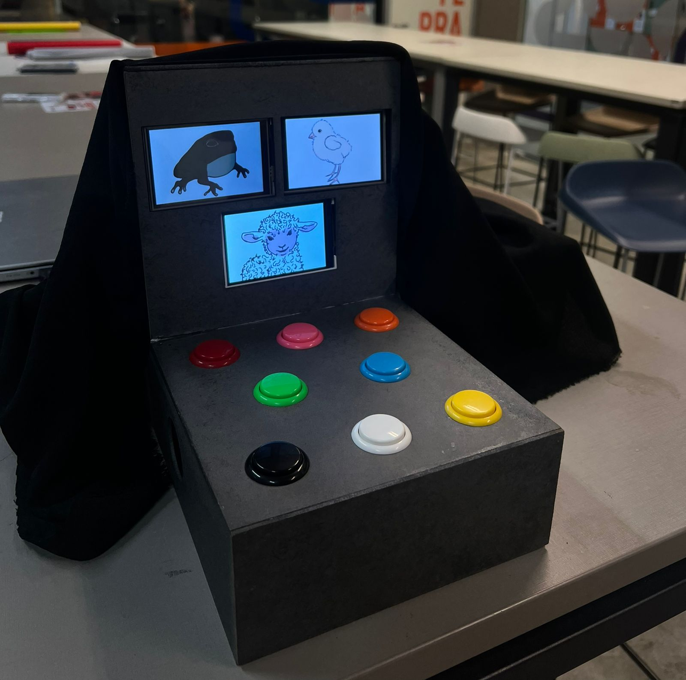
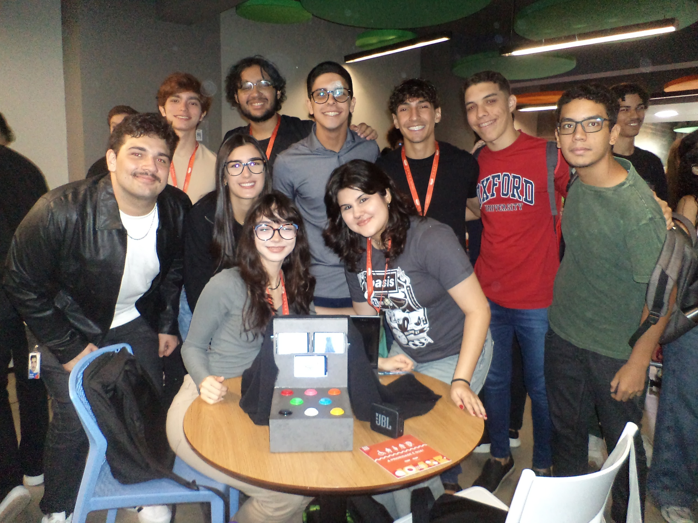
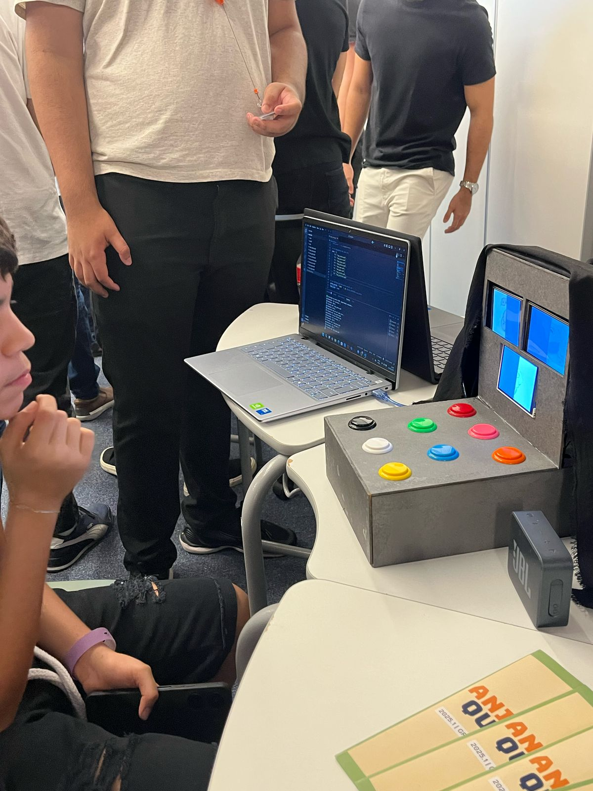
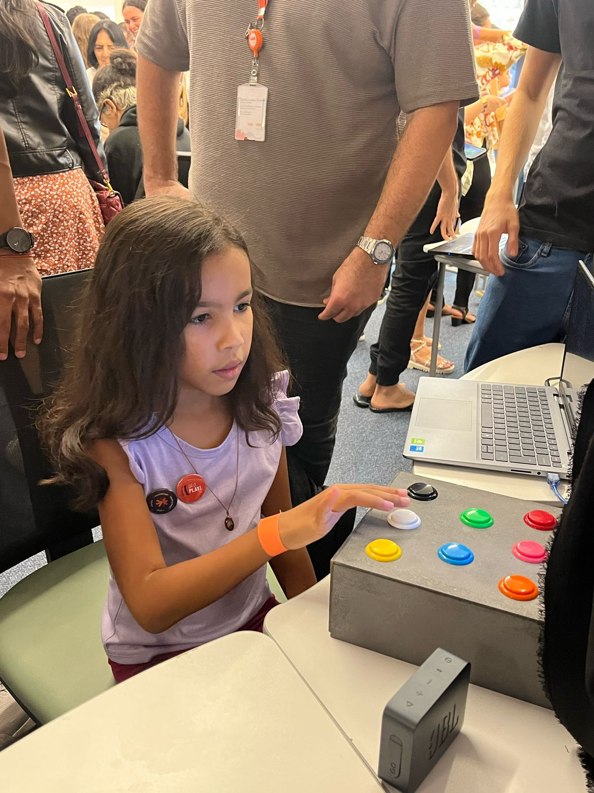
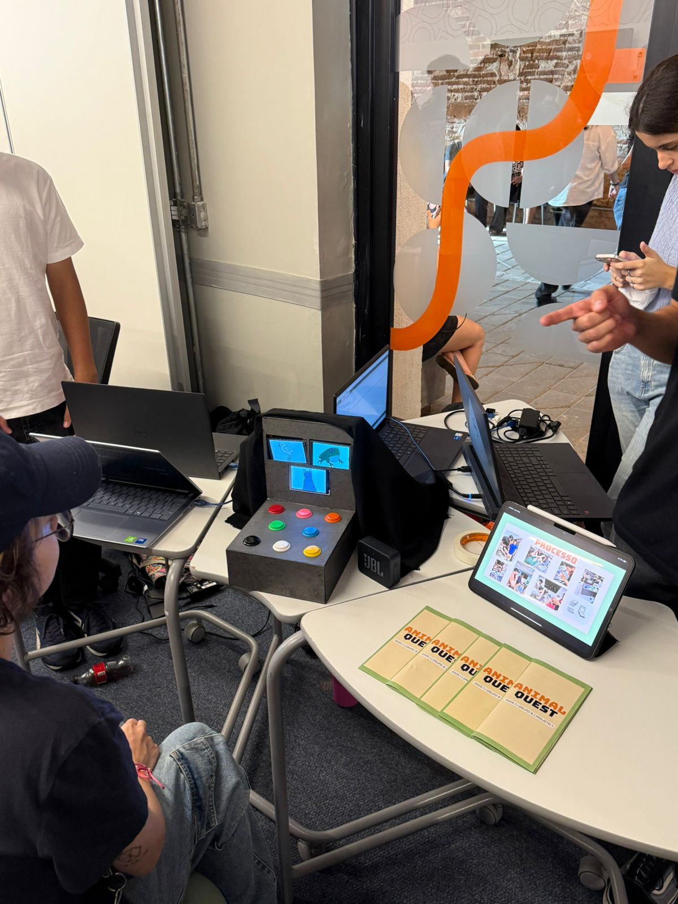
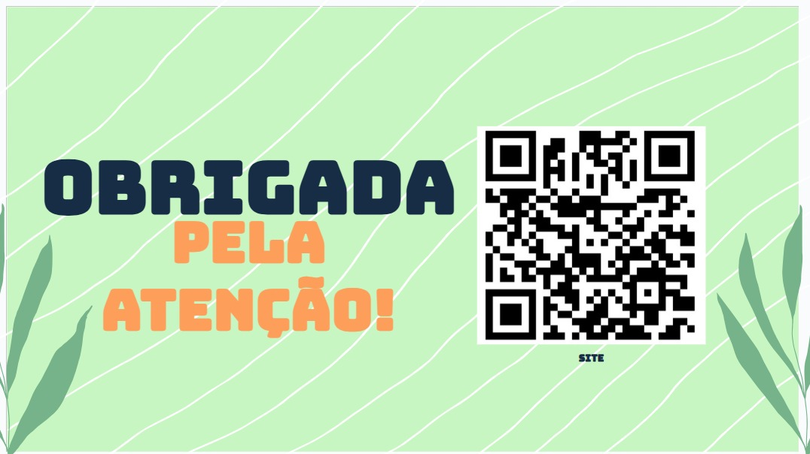

Sobre o Projeto
O "Animal Quest" é um jogo interativo educativo voltado para o público infantil com sindrome de down. Nele, os jogadores associam sons e imagens de animais, desenvolvendo memória, atenção e aprendizado de forma lúdica por meio do jogo. Utilizamos Python e Arduino com a extensão Pyserial e Pygame para conserguirmos conectar o python ao arduino, utilizamos 1 Arduino mega e 3 Unos, alem de que formamos a base do nossso jogo pelo site Scratch, desenvolvemos o jogo em busca da inclusão das pessoas com sindrome de down no ambiente tecnologico para criar uma experiência divertida e acessível. Para mais informações, leia o QR code que leva ao nosso site.